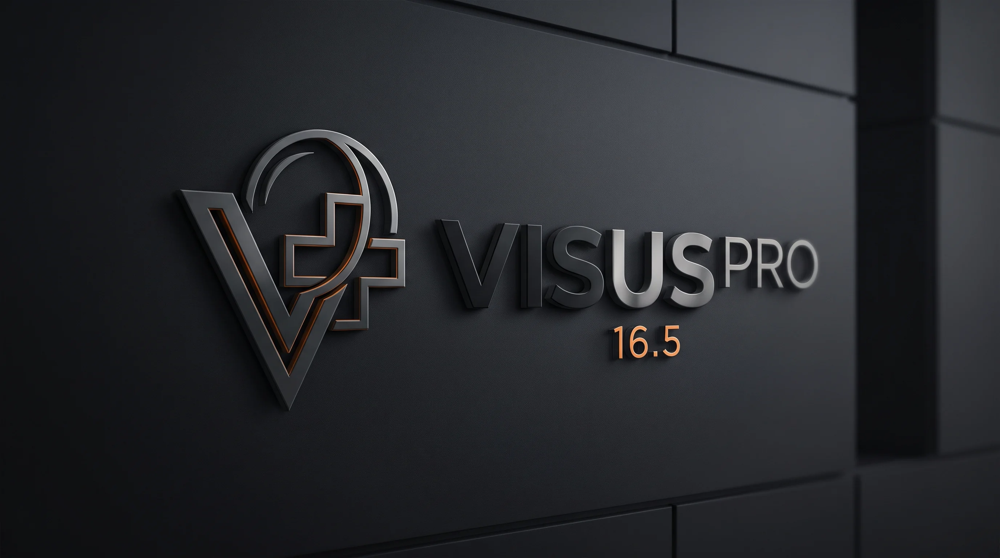
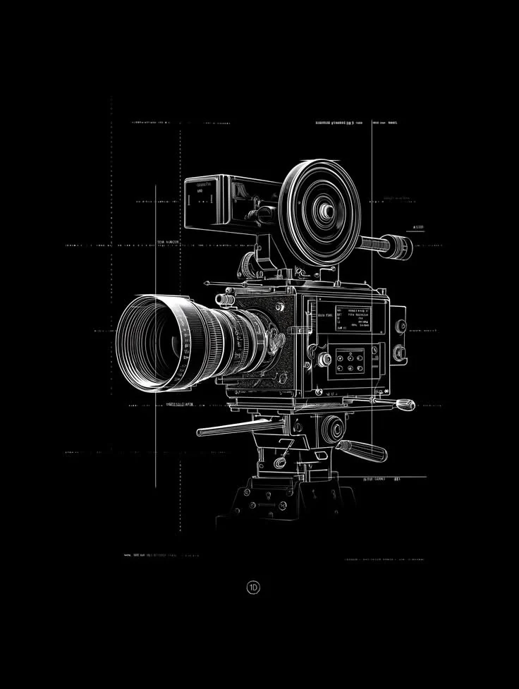
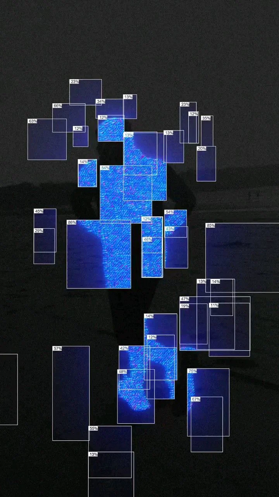
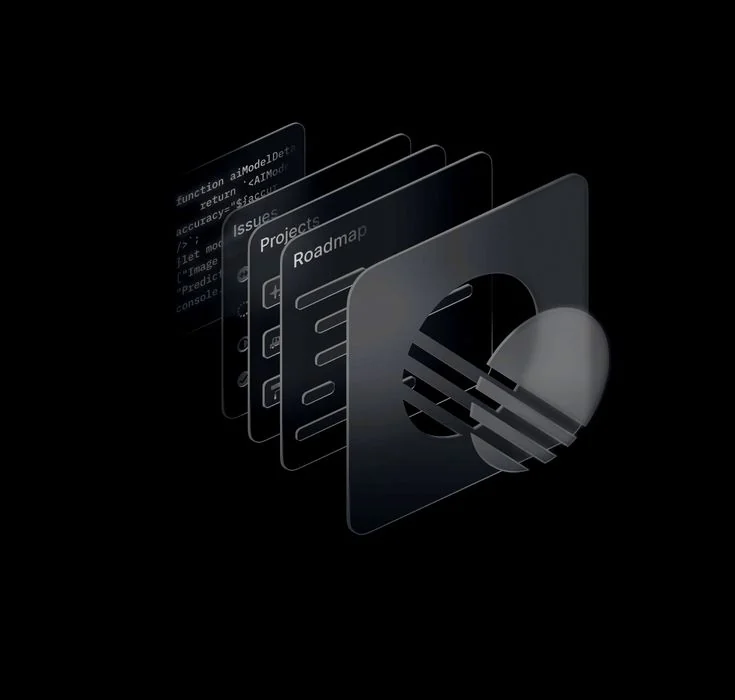
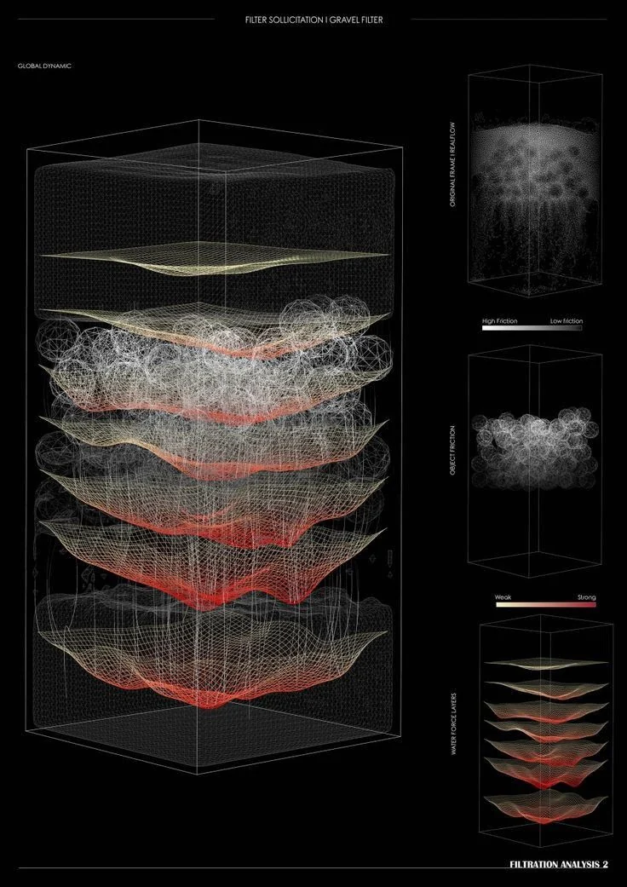
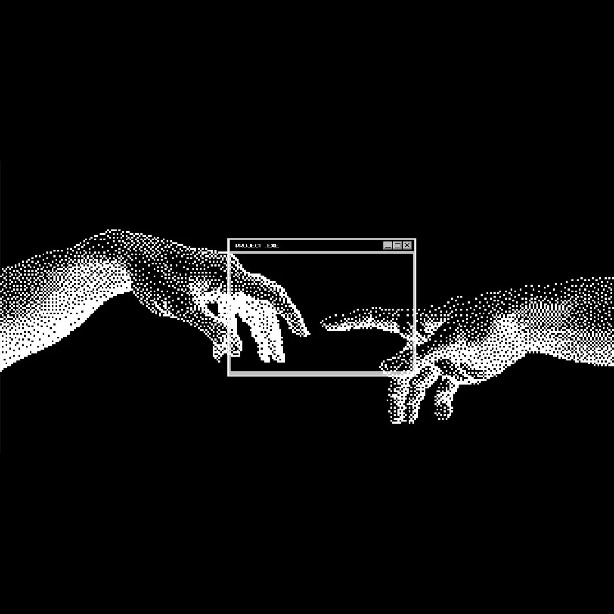

Paciente e exames
Cadastro, busca, edição, arquivamento, mescla de duplicados, histórico, retornos e dados clínicos por especialidade.
SOFTWARE DE IMAGEM CLÍNICA VERSÃO 16.5
Do sinal de vídeo ao laudo.
Tudo no mesmo fluxo.
Capture, revise e documente exames com imagem em uma estação de trabalho que conecta paciente, mídia clínica, achados, histórico e laudo.

01 / A PLATAFORMA
O Visus integra o que acontece durante o procedimento com o que precisa ser preservado depois: imagens, vídeos, dados clínicos, achados, laudo e histórico do paciente.
Cadastro, identificação, metadados clínicos e retorno vinculados ao histórico.
Vídeo ao vivo, fotografia, gravação, clipes, áudio e galeria organizada.
Anotações, comparação, métricas técnicas, achados e assistentes locais.
Laudo estruturado, prévia, PDF, assinatura e continuidade no histórico.
02 / CAPTURA
Trabalhe com câmera USB, HTTP Snapshot ou MJPEG. Congele a imagem, capture a melhor foto, grave o procedimento ou recupere um trecho recente em clipes de 10, 20 ou 30 segundos.

03 / ANÁLISE VISUAL
Organize a galeria, anote imagens e compare registros do mesmo paciente. A estação de imagem permite rever achados sem sobrescrever o original.
As métricas de imagem são técnicas e não constituem diagnóstico.

04 / DOCUMENTAÇÃO
Escolha o procedimento, preencha seções estruturadas e revise os achados com as imagens à mão. Visualize o PDF antes de emitir e mantenha cada versão ligada ao exame.

05 / FERRAMENTAS DO SISTEMA
Além do núcleo de captura, análise e laudo, o Visus reúne recursos para organizar toda a operação.
Cadastro, busca, edição, arquivamento, mescla de duplicados, histórico, retornos e dados clínicos por especialidade.
Fotos, vídeos, clipes, áudio, miniaturas, melhores frames, marcação de momentos e agrupamento de semelhantes.
Validação de cadastro, revisão do laudo, qualidade de imagens, resumo longitudinal, sugestão de modelo e estruturação de notas com consentimento.
Comandos de voz offline em português, gravação de áudio, importação de texto de PDF/DOCX e exportação do exame em PDF, JSON ou ZIP criptografado.
Indicadores de produção, perfil assistencial, recorrência, qualidade dos dados e governança, com filtros e exportação analítica em PNG, CSV ou PDF.
Auditoria, manifesto de integridade SHA-256, backup local, dados separados por conta e fila offline para sincronização de metadados.
Dados do médico e da clínica, logotipo e cores do laudo, privacidade, armazenamento, backup e prévia antes da migração de dados antigos.

06 / VISÃO ISR
O conceito ISR — Intelligence, Surveillance and Reconnaissance — é conhecido na tecnologia militar. No Visus, inspira a organização do fluxo visual: acompanhar o sinal, registrar evidências e revisar imagens com o contexto do exame.
É uma referência de método aplicada à documentação clínica. O software não é um equipamento militar e não produz diagnóstico automático.
07 / ESPECIALIDADES
Campos, seções e modelos se adaptam ao procedimento escolhido.
08 / TECNOLOGIA RESPONSÁVEL
Os assistentes locais ajudam a revisar dados e imagens. A IA externa pode sugerir texto e modelos quando configurada e autorizada, sempre para avaliação do profissional. Ela não diagnostica nem assina laudos.

Os exames permanecem prioritariamente no computador. Auditoria, manifesto de integridade e backup apoiam a rastreabilidade. A fila sincroniza metadados elegíveis; o envio de arquivos clínicos está desativado por padrão.
09 / CONHEÇA O VISUS
Converse com a Sirius Dynamics sobre sua especialidade, fonte de vídeo e rotina de documentação.
Solicitar apresentação